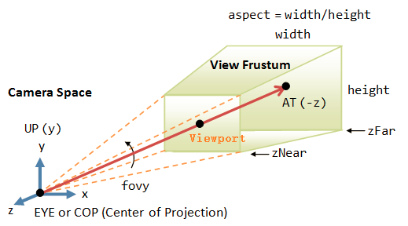

3D对象(Object3D) → Camera →
远景相机（PerspectiveCamera）
进行远景投影的相机。
远景投影，也称之为透视投影。这个是我们人眼观察世界的模式，远景投影相机示意图如下：

参考阅读本站WebGL基础教程-3d绘图基础知识。
示例
var camera = new THREE.PerspectiveCamera( 45, width / height, 1, 1000 );
scene.add( camera );
构造器（Constructor）
fov — 相机视锥体垂直视角
aspect — 相机视锥体宽高比
near — 相机视锥体近裁剪面
far — 相机视锥体远裁剪面。
属性（Properties）
相机视锥体垂直视角，从下到上的观察角度。
获取或设置相机缩放因子（zoom factor）。
相机视锥体近裁剪面。
相机视锥体远裁剪面。
焦点，用于立体视觉和场深度效果的目标距离。这个参数不影响投影矩阵，除非是使用立体摄影机。这个参数不影响投影矩阵，除非是使用立体摄影机。
相机视锥体宽高比，等于窗口宽度除以窗口高度。
视椎体窗口规格或null。
用于较大坐标轴的胶片尺寸。默认为35（毫米）。这个参数不影响投影矩阵，除非.filmOffset设置为非零值。
水平偏离中心偏移量，和.filmGauge同单位。
方法（Methods）
返回考虑了缩放系数 .zoom 的当前视角，单位为角度（°）。
返回当前和 .filmGauge 有关的 .fov 的焦距。
返回胶片上图像的宽度。如果 .aspect 大于等于1（景观格式（landscape format）），则结果等于 .filmGauge。
返回胶片上图像的高度。如果 .aspect 小于等于1（肖像格式（portrait format）），则结果等于 .filmGauge。
设置当前和 .filmGauge 有关的 .fov 的焦距。
默认情况下，焦距为35mm（全幅）相机指定。
focalLength — 焦距（focal length）
frameGauge — 胶片尺寸（film gauge）
通过焦距设置 .fov 。也可以通过可选参数设置 .filmGauge。
该方法已废弃，请使用 .setFocalLength 来替代。
fullWidth — 多视图设置的全宽
fullHeight — 多视图设置的全高
x — 副摄像头的水平偏移
y — 副摄像头的垂直偏移
width — 副摄像头宽度
height — 副摄像头高度
该方法用于在一个较大的视椎体中设置视图偏移。这对于多窗口或多监视器/多机设置是有用的。
比如，如果你有一组 3x2 显示屏，每个屏幕分辨率为 1920x1080，显示屏位于一个网格中，如下所示：
+---+---+---+
| A | B | C |
+---+---+---+
| D | E | F |
+---+---+---+
然后对于每个显示屏，你将像下面这样调用：
var w = 1920;
var h = 1080;
var fullWidth = w * 3;
var fullHeight = h * 2;
// A
camera.setViewOffset( fullWidth, fullHeight, w * 0, h * 0, w, h );
// B
camera.setViewOffset( fullWidth, fullHeight, w * 1, h * 0, w, h );
// C
camera.setViewOffset( fullWidth, fullHeight, w * 2, h * 0, w, h );
// D
camera.setViewOffset( fullWidth, fullHeight, w * 0, h * 1, w, h );
// E
camera.setViewOffset( fullWidth, fullHeight, w * 1, h * 1, w, h );
// F
camera.setViewOffset( fullWidth, fullHeight, w * 2, h * 1, w, h );
注意，没有任何理由在一个网格中的显示屏必须具备同样的尺寸。
清除视图偏移。
更新相机投影矩阵，必须在参数发生变化后调用。
返回一个 PerspectiveCamera 对象的克隆。
把相机数据转换成JSON格式。
源代码
src/cameras/PerspectiveCamera.js